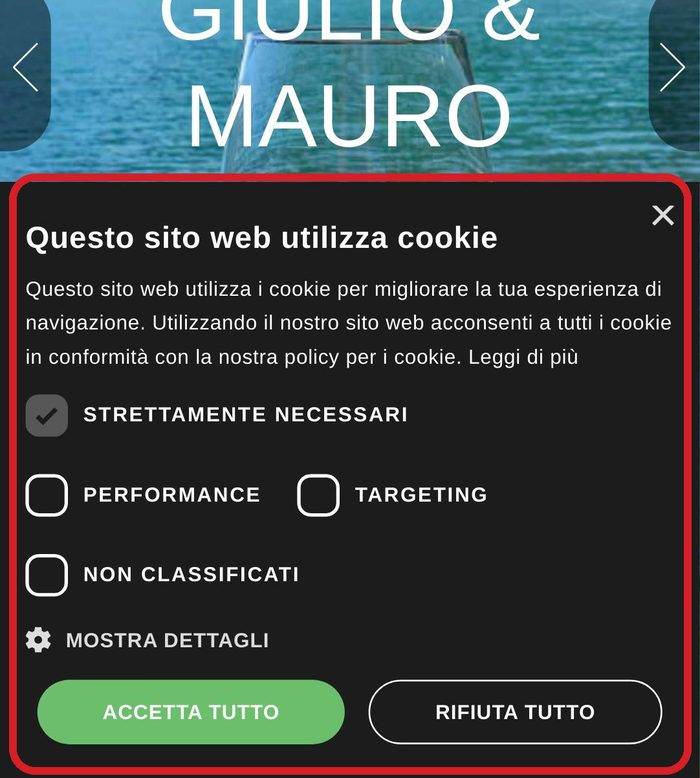
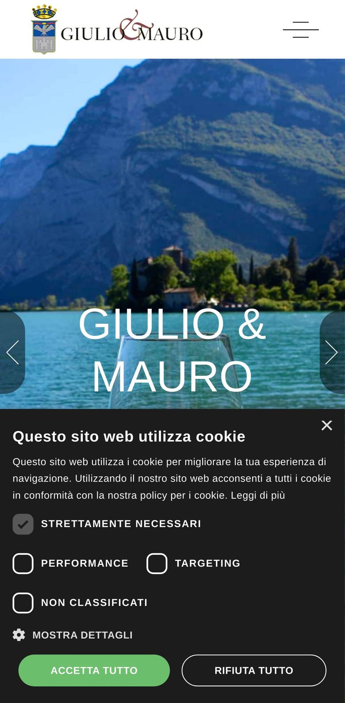
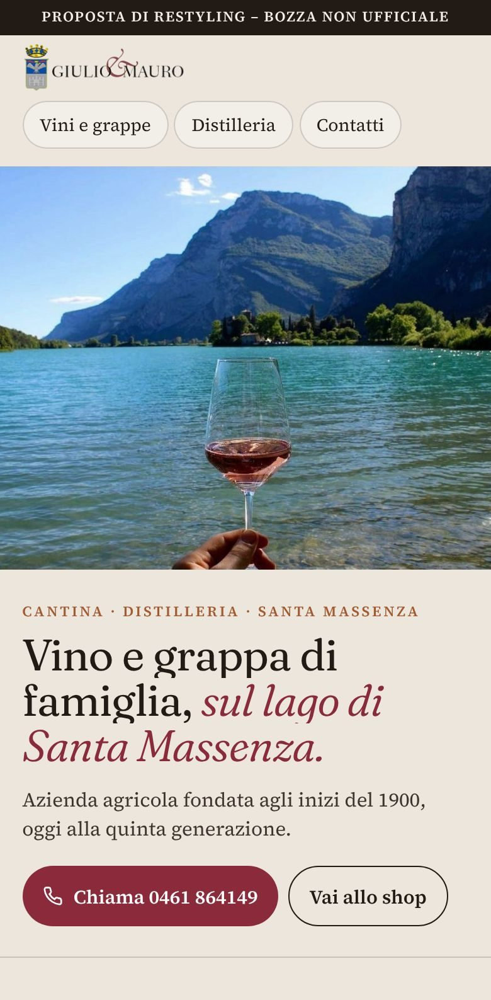
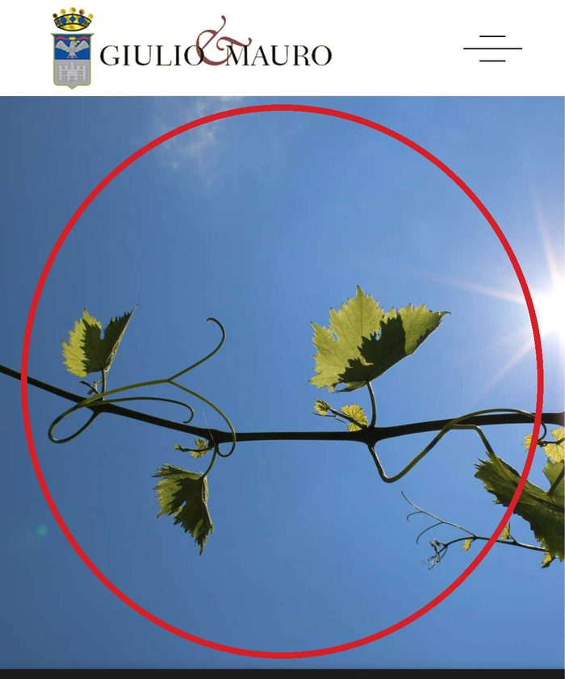

Il banner copre metà schermo
Da telefono, in home, il banner dei cookie occupa il 42% dello schermo: il titolo e i contatti non si vedono.
Giulio & Mauro · Santa Massenza
Come appare oggi la prima schermata da telefono di giulioemauro.it, e come potrebbe apparire. Trascinate il cursore.


OggiCon noiSchermate da telefono, primo schermo.

Da telefono, in home, il banner dei cookie occupa il 42% dello schermo: il titolo e i contatti non si vedono.

Aprendo la pagina Contatti da telefono, il primo schermo è una foto di un tralcio: indirizzo e telefono arrivano solo scorrendo.
Accanto all'indirizzo vero compaiono un indirizzo di Barcellona e un numero di prova, rimasti dal modello grafico del sito.
Pagina: giulioemauro.it/contatti/
Peso della home caricata da telefono
File scaricati per aprire la home
Schermo coperto da banner al primo accesso
Misure da telefono (Chrome, cache vuota). Sito attuale misurato il 22 ottobre 2026; la bozza non ha ancora banner dei cookie perché non usa servizi esterni.